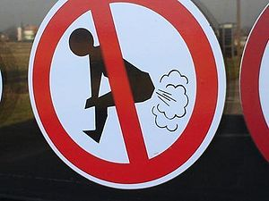

Pedología
 De: La Frikipedia, la enciclopedia extremadamente seria.
De: La Frikipedia, la enciclopedia extremadamente seria.
Ciencia dedicada al estudio de los pedos. La pedología moderna divide su actividad entre la pedografía o estudio de la historia, folclore y costumbres asociadas al pedo, y la pedología experimental o científica que estudia el fenómeno desde un punto de vista físico, químico y biológico.
No se debe confundir la pedología en cualquiera de sus ramas con la adivinación pédica (a traves de la absorción directa culo-nariz de pedos por parte del pito-niso, que vulgarmente se llama también pedología.
Este trabajo va encaminado a defender esta necesidad fisiológica, execrada injustamente por casi todos los humanos, sin recordar que, casi todos nosotros nos pedemos cuando nadie nos oye y nos quedamos tan satisfechos después.

doctor caraculo de la universidad del planchazo.
 prohibida la autopropulsión
Los hipócritas se han empeñado en decir que el pedo es un ruido molesto e indecoroso, que ofende y denigra al que lo oye y expele respectivamente. Nada de eso, señores. El pedo es, ha sido y será siempre, una fuente de hilaridad sanísima, que produce efectos optimístas y es inevitable muchas veces reirse.
Nadie desde que el mundo es mundo ha podido evitar el pedarse diariamente y detrás de Marco Antonio , se pedieron Nerón ,la Pompadur, Voltaire, Napoleón, (antes y después de Santa Elena), la Chelito, Picasso, y cuantos seres elegidos por la providencia han existido ,que por algo en la historiase cita a estos señores .
Se peden hoy en día por decirlo así: Magistrados, Militares (con o sin graduación), Catedráticos, Tarraconenses, Filósofos , y el publico en general ( y el de butaca), sin que nadie pueda evitarlo .Pues bien, si eso de pedarse es inevitable y hasta sano, ¿por que no podemos aceptar lo que la naturaleza nos impone?.
Seamos consecuentes y no condenemos una cosa que todos hacemos y que no tiene otra defensa que dejarse oír . !Por favor señores!! No condenemos al pedo sin oírlo!.
Hay pedos indecentes también es verdad que no son dignos de escucharse, ni son tolerables. Para ellos nuestra repulsa y enemistad más violenta. Pero para los pedos inocentes e hilarantes, seamos benévolos. Se lo merecen. Por esta razón vamos a tratar de clasificarlos para conocimiento de todos.
Clasificación por su estado
- Sólido : este estado se caracteriza por ser tan oloroso y oler a verdura y alimentan a los presentes. Si se pearan diez personas a la vez, podrían acabar con el hambre en el mundo.
- Líquido : son aquellos que después de ser expelidos chocolatean los calzoncillos.
- Gaseoso : son incoloros, insípidos...pero huelen fatal.
- Plasma: se los avientan los fantasmas
Clasificación de las ventosidades
nuevo método para ahorrar gasolina
Por su sonoridad
a) Ruidosos:
- Cataclísmicos.- Ensordecedores y capaces de ocasionar desgarros.
- Típicos.- Son los pedos considerados "normales". Asombran pero no asustan.
- Forzados.- Cuando necesitan la ayuda del autor para encontrar la salida, ya sea masajeando el estómago, haciendo fuerza o levantando una nalga del asiento. Son de resultado incierto.
- Transeúntes.- Los que salen mientras el sujeto se desplaza, acompasados a cada paso. Pueden subdividirse en función del lugar donde se expelen: subiendo escaleras, caminando por la calle, etc.
- Domesticados.- Aunque parezca mentira, hay personas que tras penosos y largos entrenamientos han conseguido que sus ventosidades suenen a famosas piezas musicales, siendo notorios los casos de Jeremías Fuentes, de Campohermoso (Almería), alias "El Chiflo", famoso por su habilidad para interpretar la obra de Manolo Escobar con "música de viento", especialmente el tema titulado "Mi carro", y Genís Bufestendres, de Mollerusa (Lleida), hábil intérprete del "Sitio de Zaragoza" a dos voces también con sus ventosidades.
- Falleros.- Similares a tracas, con altibajos y final muy estrepitoso.
b) Silenciosos:
- Bufas.- Nombre genérico para los pedos sin ruido notorio.
- Troceados.- Pedo que, para disimular, se intenta que salga poco a poco.
c) Por su aroma:
- Bufa negra.- También llamado "pedo podrido", es el más hediondo de todos. Por lo general es silencioso, con lo que aumenta su peligrosidad por el factor sorpresa. Especialmente indicada para disolver reuniones, etc.
- Perfa.- Es una bufa menos intensa que la anterior, con olor reconocible: ajo, coliflor, etc. . El hecho de que se reconozcan los ingredientes básicos la hace especialmente repulsiva.
- Calefa.- Similar a la anterior, pero con olores químicos: fermentos lácteos (queso), ácidos, etc. Nauseabunda sobre todas las cosas es la que huele a descomposición bacteriana (patata podrida).
d) Por su acompañamiento:
- Volcánicos.- Con salida violenta de "materiales internos" de todo tipo.
- Tuestabragas.- Los gases expelidos son extraordinariamente densos, incluso con elevado porcentaje de humedad.
- Con burbujas: Los vapores vienen con líquido y decididamente dejan la ropa interior con estampados, en el caso de que antes fuera de colores lisos.
|
|
precaución
Este artículo a partir de aquí se va a poner más oloroso. Uso de mascarilla obligatorio.
|
Clasificación por potencia
Grado mínimo
- Pedo honradete: Es el que se expele en una sola emisión de voz, es ruidoso y corto, y huele mal. Se lo suelen tirar los ganaderos, los atletas de circo, los vascos de caserío, y los hinchas del fútbol.
- Pedo cómico: Suena agudamente, es trémulo, se muere uno de risa al oírlo. Lo echan los empleados de banca, los peluqueros, los botones de casino y las señoras con abrigo de piel y mucho culo.
- Pedo con rabo: Es el que empieza fino y termina con porra, huele mal. Se lo tiran los carteros durante el reparto, los municipales, los serenos y las dueñas de las casas de huéspedes. Levantan airadas protestas en los "pedoescuchas" y no son aceptables.
- Peditos : (también llamados avellanas): Son pedos pequeños, de escasa duración y que salen en "ristra" como los ajos. Se los tiran de cinco en cinco las mecanógrafas, las telefonistas, las cajeras de farmacia. Por lo coloradas que se ponen y la peste que se masca, se adivina enseguida donde está la emisora.
Grado uno escala Ritcher
- Cuescos: Son pedos blanduchos con sonido agudo, que casi siempre dejan nicotina en los calzoncillos y huelen malísimamente. Se los tiran los que pasan muchas horas del día sentados, estudiantes, banqueros, notarios y abogados con pleito. Son una verdadera guarrada.
- Fallidos o bufa: Son los más traidores que se puede imaginar porque no avisan y cuando uno se da cuenta ya nos hemos tragado la mitad. Dejan una estela larguísima y se está oliendo durante un cuarto de hora o más. No son admisibles. El que se tira una "bufa" es un cerdo.
- Pedo acuático: Es el que nos tiramos dentro de la bañera, en la piscina, en el río, o en la playa. Son simpatiquísimos, a nadie molestan, apenas huelen y además cuando salen hacen "cua.cua..cua
- Pedo invernal: Es de miedo, es el que nos echamos en la cama, cuando estamos bien arropaditos. Cuando nos acordamos de él, metemos la cabeza debajo de las mantas y nos lo tragamos entero.
Grado dos escala Ritcher
- Pedo mañanero: El que nos tiramos a primera hora de la mañana según vamos al cuarto de baño a lavarnos, es por decirlo así el que nos avisa que una nueva jornada comienza.
- Pedo cineasta: También es de alivio, parece venir arrastrándose por el suelo y trepar por las piernas del espectador hasta que llega a las narices. No hay defensa. Cuando se enciende la luz todos miramos con odio a nuestros vecinos de las filas anteriores.
¿¡
IP anónima, qué has hecho?!
- Pedo huérfano: Es aquel que lo percibimos por su aroma, y del que nadie se hace responsable, no tiene padre el pobrecito.
- Pedo nupcial: Es el pedo que después de ganada la confianza necesaria, compartiremos con otras personas en la cama, es de un efecto bastante curioso, pues produce risas al mismo tiempo que produce bochorno, después de esto la pareja ya está preparada para afrontar cualquier problema. Es aceptable, pues crea unión.
Grado 3 escala Ritcher
- Pedo zapatero: Es el que se nos escapa cuando intentamos atarnos los cordones de los zapatos. La postura violenta, hace que el pedo sea ruidoso. Se suele mirar rápidamente hacia atrás y si no viene nadie se respira con satisfacción.
- Pedo grasiento: Es el que se echa el judías . Estos pedos son tóxicos. Muchas bajas de oficiales han sido producidas por los pedos "marciales". Cuando el que se peda es el jefe que va a caballo no hay quien lo esquive.
- Pedo seníl: Se lo tiran las viejas a primera hora del día en la iglesia y después tosen un poquito para disimular.
- Pedo artístico: Son los que se tiran algunos virtuosos del peder, y que mediante ciertas posturas de la nalga, logran el sonido deseado: agudo, grave ,etc. Estos pedos son más bien para concurso.
Grado cuatro escala Ritcher
- Pedo mulligan: Es el que se tiran los golfistas en el teedel 1 cuando colocan el estance, si a la izquierda hay un lago y a la derecha un fuera de límites, está permitido repetirlo, pues se considera que se lo ha echado bajo presión.
- Pedo provisional: Según el reglamento de la Royal & Ancient, es el pedo que se tira uno cuando ha ido a buscar una bola al bosque que previsiblemente puede haberse perdido. Si el bosque ha sido declarado área de protección ecológica, dicho pedo está penalizado por la regla 40-2b con dos golpes de penalidad, por el posible impacto ecológico ocasionado.
- Pedo stableford: Es una modalidad de pederse para concursos, en la que a cada pedorro se le adjudica un hándicap, que va en función de su habilidad, y de si ha ingerido previamente bebidas gaseosas (Coca-Cola, Vichí, etc.) o si ha comido cocido o "escudella".
- Pedo putt: En modalidad masculina, es el que se tira el jugador a falta de un metro para embocar la bola mientras dice "a ver si la meto". Y en modalidad femenina, en las mismas circunstancias, pero diciendo "a ver si me entra".
- Pedo consciente: Terminamos la clasificación con este, que es diferente a los demás. Nos lo tiramos voluntariamente, aprovechando el momento en que estamos solos, levantamos una nalga y ¡zas! . Después se trabaja más agusto.
Grado máximo
- Son aquellos que son muy ruidosos y que su autor, consciente del pedo que se avecina , levanta la pierna y pone cara de gusto y de orgullo. Tras cometer su acto, dispersa manifestaciones , revueltas e incluso golpes de estado. Tienen que pasar miles de años antes de que pasen sus efectos nocivos, además de numerosas bajas y daños colaterales.
incluso puedes alcanzar el nirvana...y sobrepasarlo
|
|
precaución
Este artículo a partir de aquí se va a poner muchísimo más oloroso. Es posible que una mascarilla normal ya no te sirva en este punto...probablemente mueras.
|
Preguntas más frecuentes
¿Qué es lo que hace que los pedos tengan olor?
El olor de los pedos proviene de pequeñas cantidades de Sulfuro de Hidrógeno y Azufre ( Acido Sulfhídrici) libre en la mezcla...eso y las judías que te has tomado.
¿Porqué los pedos hacen ruido?
Los ruidos son producidos por la abertura anal. El ruido depende de la velocidad de expulsión del gas, y de cuan estrecha es la abertura de los músculos del esfìnter anal , incluso algún desgarramiento según la potencia.
¿Cuánto gas produce una persona normal?
En valores promedio, una persona produce el equivalente a cerca de un litro de pedos por día, distribuídos en aproximadamente 14 pedos diarios. Pero tu no eres normal, esto tu lo superas con creces.
Puede ser difícil para Ud determinar el volumen de sus pedos diarios, pero Ud. puede estimar cuántas veces al día pedorrea . Piense en eso como en un pequeño experimento científico: anote todo lo que come y cuente el número de veces que Ud. pedorrea. Además puede anotar ciertas consideraciones sobre el olor de sus pedos. Ud. descubrirá una relación causal entre lo que come y el hedor de sus pedos.
¿Cuánto tarda hasta que el pedo llega a la nariz de alguien?

uno de los estados en que se puede presentar un pedo ( gaseoso )
Depende de las condiciones atmosféricas, humedad y velocidad del viento, también de la distancia entre las personas.
Los pedos también se dispersan; su potencial nauseabundo disminuye con la dilución . Condiciones excepcionales existen cuando el pedo es liberado en un area pequeña y cerrada. Tal como un ascensor, o un cuarto pequeño o dentro de un automóvil, porque esas condiciones limitan la cantidad disponible del diluyente (aire) y el pedo va a permanecer en una concentración que permitirá su percepción, por más tiempo, hasta que se condense en las paredes.
¿Algunas personas nunca pedorrean?
No. Si ellas estuviesen vivas, pedorrean. Algunas personas, comprobado está, pedorrean aún , algunas horas después de fallecidas. Otros lo guardan en un tarro y piden a sus descendientes que quieran cobrar la herencia, que lo huelan.
¿Los hombres pedorrean más que las mujeres?
Las mujeres pedorrean tanto como los hombres. El caso es que los hombres tienen menos vergüenza; por el contrario, incluso más orgullo de ello.
¿En qué momento se está más propenso a pedorrear?
De hecho, durante las mañanas, cuando está en el baño. Esto es conocido como "Cantatta Matinal". Si es Ud. un gentleman, puede conseguir una buena resonancia y ser oído en toda la casa.
¿El pedo es un eructo que salió del lado equivocado?
No. La frase "El eructo es un pedo que tomó el ascensor" es puro folklore. El eructo viene del estómago y tiene una composición química diferente a la de un pedo. Los pedos tienen menos aire atmosférico y más gases producidos por bacterias. No tienes excusa, guarro de mierda
en ocasiones huelo peeeeedos
¿ Adónde van los pedos que aguantamos?
¿Cuántas veces uno se aguanta un pedo, pretendiendo soltarlo en la primera oportunidad apropiada, y después descubre que ha "desaparecido": ¿En realidad salió lentamente, sin que la persona se diera cuenta? ¿Fue absorbido por la corriente sanguíne!a? ¿O qué es lo que en realidad pasó?...los pedos ni se crean ni se destrullen, se transforman.
¿Es posible "encender" los pedos?
La respuesta es sí. Normalmente los pedos incluyen Metano e Hidrógeno, ambos gases inflamables. Por esto, Ud. debe tener en cuanta que intentar la ignición de un pedo puede ser peligrosa. A saber: no sólo la llama puede retroceder y subir nuevamente por su colon, sino que también su ropa o lo que estuviese cerca, puede prenderse. Las estadísticas confirman que cerca del 25% de las personas que lo intentaron, quemaron sus nalgas y los pelos del culo...pero aún así tu hazlo, es diver.
¿ Los pedos olorientos son tóxicos?
No se conocen, hasta la fecha, agentes intoxicantes en la flatulencia , pero su pulmón puede quedar traumatizado según su grado.
¿Es posible enlatar pedos para su uso posterior?
Teóricamente si, pero hay una serie de problemas logísiticos: Ud puede intentar usar una bolsa plástica en el interior de una lata. Ud. También puede hacerlo como una experiencia para una Feria de Ciencias. Le sugerimos que pedorree en varias bolsas plásticas y cierrelas cuidadosamente. Luego infle otras bolsas plasticas con aire normal. Espere 6 horas. Elija voluntarios para oler el contenido de las bolsas y verifique si ellos pueden definir si lo que hay allí dentro es un pedo o sólo aire.
Esta experiencia le dará información sobre si es posible almacenar pedos. Si lo hiciese en la bañera, inclínese de forma que sus pedos emerjan como burbujas frente a Ud , pero nunca detrás suyo, y así podrá poner las burbujas dentro de una botella y tener pedos puros, sin contaminación con el aire atmosférico. En un sentido comercial no es muy rentable, pero hay gente para todo.
¿De qué color es el pedo?
Es una regla: siempre es incoloro, porque los gases que los constituyen, son incoloros. Imagine que interesante seria que usted pedorree color naranja, tipo Dióxido de Nitróge! no. Nadie, nunca más, más preguntarìa de quién es ese pedo.
¿Otros sienten más el olor que el propio autor?
El pedo debería - en teoría- oler tanto para el que lo emite como para las otras personas Pero quien lo hace tiene una ventaja por el hecho de haberlo propulsado lejos de su cuerpo, en dirección opuesta a su nariz.. Sin embargo, notar que pedorrear contra el viento, anula esa ventaja. Calcula la dirección del viento antes de pear.

amazona tirándose un pedo de fuego
Oda al pedo
Poema del pedo

|
Volverán los mal olientes pedos
El pedo es un aire ligero
que sale por un agujero
con un olor acedo,
que anuncia la llegada
de su amiga la cagada.
El pedo es un alma en pena
que a veces sopla y a veces truena;
es como el agua que se deliza,
que cuando sale nos causa risa.
El pedo es vida, el pedo es muerte,
Y tiene algo que nos divierte;
el pedo es aire que cuando va soplando
todo la va fumigando.
El pedo puja, el pedo llora,
Y a veces suena como tambora;
el pedo es aire, el pedo es ruido,
y a veces sale por un descuido.
El pedo es fuerte e importante,
pues le sale a toda la gente;
en este mundo el pedo cuenta,
porque todo mundo se los avienta.
Hay pedos gordos, hay pedos flacos,
Segun los gruesos que sean los tacos;
el pedo tiene algo monstrouso,
si te lo aguantas te manda al pozo.
Hay pedos tristes, y los hay risueños
segun el gusto que tenga el dueño;
el pedo es terco, el pedo es suavecito,
y apesta cuando sale con su juguito.
Si algun pedo toca tu puerta,
no se la cierres dejala abierta,
deja que salga, dejala que gire,
deja que alguien mas se lo respire.
Los pedos tienen muchos olores,
si no preguntale a los doctores;
este poema ya ha terminado,
y ojala ese pedo te los has echado
antes de que resultes bien cagado
|

|
|
|
Sabiduría frikipédica
- Amor de monja y pedo de fraile, todo es aire.
- Bien le huele a cada uno el pedo de su culo.
- De barriga gigante, pedo retumbante.
- Si el fríjol está maduro, el pedo ya está seguro
- pedo que no has de beber dejalo correr
- El pedo es un suspiro que viene del corazon, pero sale por el culo por una equivocacion
( estudio hecho por la universidad del planchazo )
Enlaces externos
- Exibición del pedo [1]
- Ejemplo de pedo inflamable[2]
Autor(es):
- Anxova
- Frikiman
- Roms
- Cibercrank
- Plasnisk
- Jarganzito
- Beatjack
- Gerri
- Psikachu
- Not so friki
Frikipedia 2005-2016, Licencia
GFDL 1.2 - Extraído por FrikiLeaks